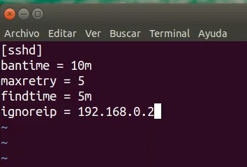
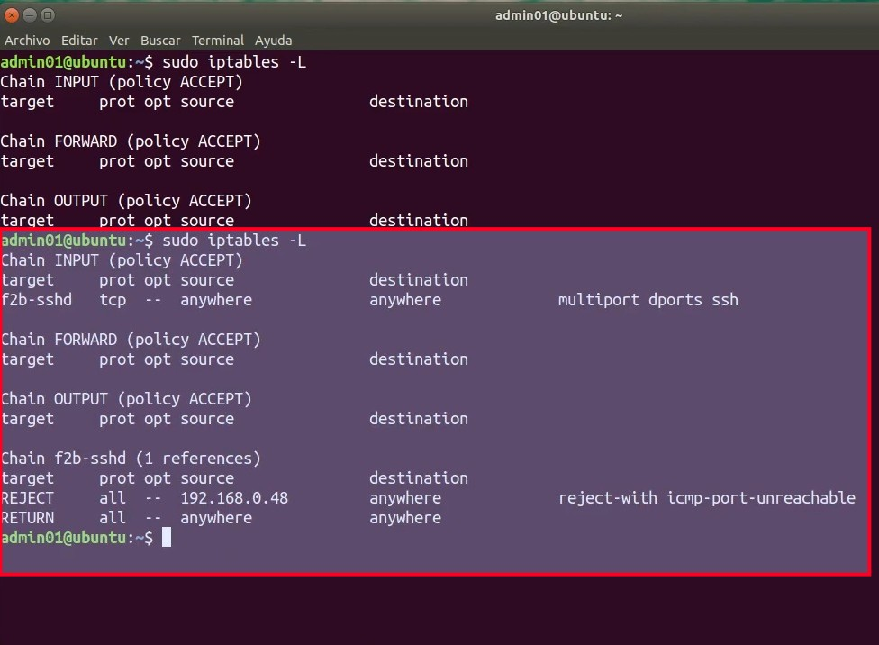

Práctica 4.3: Monitorización de Accesos y Defensa Activa con Fail2ban en SSH
Datos de la Práctica
- Módulo: Seguridad y Alta Disponibilidad (SAD - 0378)
- Unidad Didáctica: UD4 - Control de Accesos
- Requisitos: Sistema operativo Linux (Debian o Ubuntu Server en VirtualBox o GNS3) como servidor, y una segunda máquina cliente (o el equipo anfitrión) con cliente SSH para realizar pruebas de acceso y ataques controlados. Privilegios de superusuario (
sudo).
1. Objetivos
- Comprender el funcionamiento de un sistema de prevención de intrusiones en host (HIPS) mediante la inspección automatizada de ficheros de registro.
- Instalar, verificar y gestionar el demonio de seguridad Fail2ban en un servidor GNU/Linux.
- Configurar de forma persistente y modular directivas de protección en
/etc/fail2ban/jail.localrespetando la jerarquía sobrejail.conf. - Establecer parámetros de contención temporal frente a ataques de fuerza bruta (
bantime,findtime,maxretry). - Implementar listas blancas de exclusión (
ignoreip) para blindar el equipo de administración frente a bloqueos accidentales. - Simular ataques de fuerza bruta por SSH y auditar en tiempo real la respuesta reactiva en el registro
/var/log/fail2ban.logy en las cadenas dinámicas deiptables.
2. Escenario y Fundamentos Técnicos
Fail2ban es un demonio de seguridad que monitoriza de forma continua los registros del sistema operativo (como /var/log/auth.log) en busca de intentos de autenticación fallidos o anómalos. Cuando una dirección IP sobrepasa el umbral de errores configurado dentro de una ventana temporal determinada, Fail2ban actúa de forma proactiva inyectando una regla en el cortafuegos del kernel (iptables o nftables) para bloquear el tráfico entrante desde dicha dirección durante un tiempo prefijado.
[ Máquina Atacante ] ──────── Múltiples fallos SSH (>= 5) ────────> [ Servidor OpenSSH ]
(192.168.1.150) │
Genera eventos en:
/var/log/auth.log
│
Monitorizado por:
▼
[ Motor Fail2ban ]
Jail [sshd] activa
│
Dispara contramedida:
▼
[ Tráfico BLOQUEADO ] <────── Regla DROP / REJECT inyectada ────── [ iptables (f2b-sshd) ]
Elementos del Laboratorio
| Máquina / Rol | Función en la Práctica | Observaciones |
|---|---|---|
| Servidor Linux (Ubuntu Server / Debian) | Servidor SSH y ejecución de Fail2ban. | Debe tener IP fija o conocida (ej. 192.168.1.43). |
| Equipo Anfitrión (Host) | Máquina del administrador de sistemas. | Su dirección IP se incluirá en ignoreip para garantizar inmunidad. |
| Máquina de Pruebas / Cliente | Cliente SSH que simulará los accesos no autorizados. | IP distinta a la del administrador para comprobar el bloqueo efectivo. |
3. Desarrollo Paso a Paso de la Práctica
Fase 1: Comprobaciones Previas e Instalación
Puedes realizar la práctica en una máquina virtual Debian o Ubuntu Server (en VirtualBox con adaptador en modo puente o red NAT, o en GNS3).
Vídeos Explicativos de Apoyo
Si deseas visualizar los pasos en vídeo antes o durante la realización de la práctica:
-
Inicia sesión en tu servidor Linux con una cuenta con privilegios
sudo. -
Asegúrate de que el servicio OpenSSH esté instalado y escuchando en el puerto TCP 22:
(Si el puerto 22 no está en escucha o el paquete no está instalado, instálalo consudo apt update && sudo apt install openssh-server -y). -
Instala el paquete de Fail2ban:
-
Nota para entornos Debian: Si realizas la práctica sobre una distribución Debian mínima, es posible que el demonio
fail2banreporte errores al arrancar debido a que no existe previamente el fichero de eventos/var/log/auth.log. En ese caso, créalo y asígnale los permisos apropiados ejecutando:
Fase 2: Configuración de la Jaula SSH en /etc/fail2ban/jail.local
Si examinas el directorio /etc/fail2ban/, encontrarás el archivo jail.conf. Este archivo contiene la configuración predeterminada de la aplicación y plantillas para decenas de servicios (SSH, Apache, FTP, Nginx, Dovecot).
Regla de Oro: Nunca modifiques directamente jail.conf
En la propia documentación oficial de Fail2ban se indica que no deben realizarse cambios en el archivo jail.conf. En futuras actualizaciones del paquete por parte de la distribución, el archivo jail.conf se sobrescribe por completo, perdiéndose cualquier personalización.
Por ello, se debe crear el archivo /etc/fail2ban/jail.local. La configuración definida en jail.local prevalece siempre sobre la de jail.conf, y no es modificada por las actualizaciones del sistema. Tampoco debes copiar todo el contenido de jail.conf a jail.local, sino definir únicamente las secciones y parámetros que deseas personalizar.
Requerimientos de la Política de Seguridad
Configura el servicio SSH en Fail2ban de forma que cumpla los siguientes criterios:
bantime: El baneo temporal debe durar 10 minutos (600segundos).findtime: Los intentos fallidos se evaluarán en una ventana de 5 minutos (300segundos).maxretry: Si se producen más de 5 intentos fallidos, se bloqueará la dirección IP.ignoreip: La dirección IP de tu ordenador anfitrión (host físico) nunca debe ser bloqueada, evitando perder el acceso de gestión.
Procedimiento de Edición:
-
Crea o edita el archivo
/etc/fail2ban/jail.localcon un editor de textos: -
Añade las siguientes directivas, indicando en
ignoreipla IP real de tu máquina de gestión (sustituye192.168.1.50por la IP correspondiente a tu ordenador host):
[DEFAULT]
# Lista de IPs excluidas de baneo (separadas por espacio):
ignoreip = 127.0.0.1/8 ::1 192.168.1.50
# Ventana temporal en segundos para contabilizar fallos (5 minutos):
findtime = 300
# Tiempo de duracion del bloqueo en segundos (10 minutos):
bantime = 600
# Numero maximo de fallos permitidos antes del bloqueo:
maxretry = 5
[sshd]
enabled = true
port = ssh
logpath = %(sshd_log)s
backend = %(sshd_backend)s
- Guarda los cambios (
Ctrl + OyEnter) y sal del editor (Ctrl + X).
Fase 3: Activación y Verificación del Demonio Fail2ban
-
Aplica los cambios reiniciando el servicio de Fail2ban:
-
Comprueba que el servicio se encuentra activo y en ejecución sin fallos:
-
Utiliza la herramienta de gestión
(En la salida debe figurarfail2ban-clientpara verificar qué jaulas (jails) se encuentran supervisadas por el motor de seguridad:Jail list: sshd). -
Consulta el estado detallado específico de la jaula SSH:
(Observa que inicialmente los contadoresCurrently banned: 0yTotal banned: 0reflejan que no hay ninguna IP sancionada).
Fase 4: Comprobación del Cortafuegos y Simulación del Ataque
1. Estado inicial del cortafuegos:
Antes de lanzar las pruebas de acceso, comprueba que el subsistema de filtrado no tiene reglas de bloqueo activas:
(Deberás observar la cadena f2b-sshd creada por Fail2ban, pero sin ninguna IP en su lista de descarte).
2. Simulación de ataque de fuerza bruta:
Desde una máquina cliente o terminal cuya IP sea distinta a la indicada en ignoreip, intenta iniciar sesión vía SSH contra el servidor utilizando un usuario inexistente o una contraseña deliberadamente errónea:
Introduce contraseñas incorrectas de forma reiterada. Observa que, tras superar el límite de 5 intentos fallidos dentro de la ventana de 5 minutos, el servidor cortará la conexión y denegará cualquier nuevo intento de enlace, mostrando mensajes del tipo:
Fase 5: Auditoría de Logs y Reglas Dinámicas en iptables
-
Inspección de las reglas activas de cortafuegos: En el servidor, vuelve a consultar la tabla de filtrado de
Comprueba que en la cadenaiptables:f2b-sshdaparece una nueva regla que rechaza (REJECT) todo el tráfico TCP dirigido al puerto 22 procedente de la dirección IP atacante. -
Inspección del registro de eventos de Fail2ban: Abre el fichero de log de la aplicación para analizar el registro de la detección y sanción:
Localiza las líneas donde se aprecian los intentos detectados y la orden de baneo ejecutada: -
Consulta de estado con
(Comprobarás quefail2ban-client: Ejecuta de nuevo el comando de estado para ver la lista de IPs castigadas:Currently banned: 1y que enBanned IP listfigura la dirección IP del equipo bloqueado).
Fase 6: Verificación de Lista Blanca (ignoreip) y Expiración
-
Prueba de inmunidad con
Comprueba que, a pesar de superar el número de fallos fijado enignoreip: Desde el equipo cuya IP registraste en la directivaignoreip(tu máquina host física), intenta realizar más de 5 conexiones fallidas seguidas por SSH hacia el servidor:maxretry, esta máquina NUNCA es bloqueada, garantizando que el administrador mantenga siempre el control del servidor. -
Comprobación de expiración del baneo: Una vez transcurridos los 10 minutos estipulados en
Comprueba que la regla de bloqueo ha sido eliminada automáticamente por Fail2ban y que la máquina atacante puede volver a establecer comunicación con el puerto SSH.bantime, vuelve a consultar el cortafuegos en el servidor:
Desbaneo manual para pruebas rápidas de laboratorio
Si estás realizando pruebas en el aula y no deseas esperar los 10 minutos completos de bantime, puedes levantar el castigo manualmente desde la consola del servidor con el comando:
4. Referencia de Salidas Esperadas
A continuación puedes consultar las capturas de la solución oficial que muestran la configuración requerida en jail.local y el comportamiento del cortafuegos tras producirse el bloqueo:
1. Configuración de /etc/fail2ban/jail.local

2. Reglas Dinámicas inyectadas en iptables

Observaciones:
- La cadena
f2b-sshdintercepta el tráfico del puerto 22 antes de que llegue al servicio SSH. - La dirección IP indicada en
ignoreipno requiere máscara de red/32si se trata de un host individual. - La regla
REJECTenvía un paquete de rechazo inmediato (icmp-port-unreachable o tcp-reset), impidiendo que el atacante siga consumiendo recursos del proceso OpenSSH.
5. Entregables y Memoria de Prácticas
Elabora una memoria en formato PDF con tu nombre completo que incluya las siguientes evidencias:
- Captura 1: Contenido completo de tu archivo
/etc/fail2ban/jail.localmostrando los parámetrosignoreip,bantime,findtime,maxretryy la jaula[sshd]. - Captura 2: Salida del comando
sudo fail2ban-client status sshdantes de realizar las pruebas de ataque (mostrando 0 baneos). - Captura 3: Terminal de la máquina cliente demostrando los intentos fallidos consecutivos de conexión y el momento exacto en el que la conexión es rechazada por el servidor.
- Captura 4: Salida del comando
sudo iptables -Losudo iptables -L f2b-sshden el servidor mostrando la regla de bloqueo con la dirección IP del equipo atacante. - Captura 5: Líneas del registro
/var/log/fail2ban.logdonde se observe la acción de baneo (Ban <IP>). - Captura 6: Demostración de que la IP configurada en
ignoreipno es bloqueada tras superar los 5 fallos, o captura mostrando el desbaneo automático tras cumplirse el tiempo debantime.
6. Cuestiones de Autoevaluación
Responde de forma fundamentada a las siguientes preguntas en tu documento:
- Jerarquía de configuración: ¿Por qué es una mala práctica de administración editar directamente el archivo
/etc/fail2ban/jail.conf? ¿Qué ventaja aporta centralizar nuestras personalizaciones en/etc/fail2ban/jail.localfrente a una actualización del sistema conapt upgrade? - Impacto de la directiva
ignoreip: Si un administrador omite incluir su propia dirección IP o la subred de gestión enignoreipy se equivoca varias veces al escribir su contraseña en una sesión remota, ¿qué consecuencia operativa sufrirá? ¿Cómo podría resolverlo si no dispone de acceso físico al equipo? - Mecanismo de acción del cortafuegos: Explica qué diferencia existe entre que Fail2ban aplique una acción con objetivo
REJECTfrente a una acción con objetivoDROP. ¿Qué ventaja defensiva aportaDROPfrente a escáneres masivos de Internet? - Entornos en la Nube (AWS / VPS): En servidores expuestos directamente a Internet (como instancias EC2 en AWS), ¿por qué se recomienda elevar el parámetro
bantimea valores de varias horas o días, mientras que en un laboratorio de clase utilizamos valores reducidos como 10 minutos?